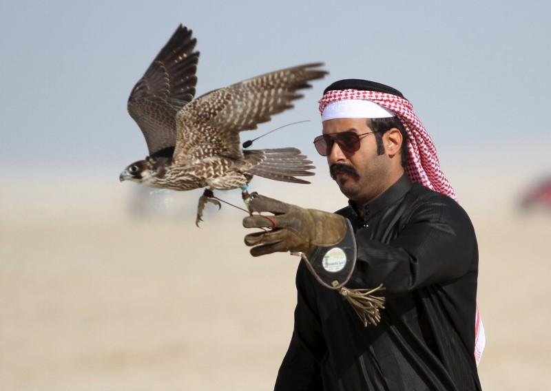
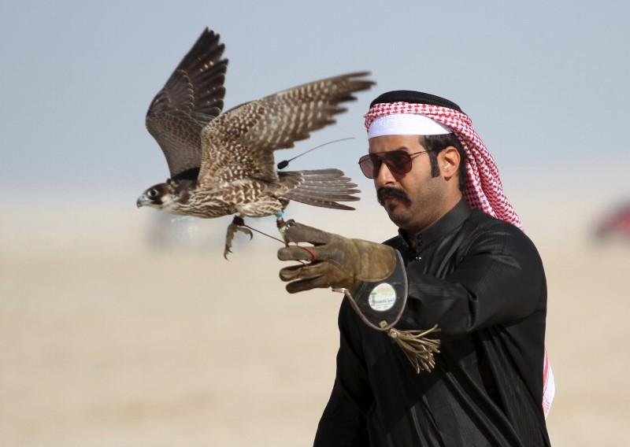

The peregrine falcon (Falco peregrinus), also known as the peregrine, and historically as the duck hawk in North America, is a cosmopolitan bird of prey (raptor) in the family Falconidae. A large, crow-sized falcon, it has a blue-grey back, barred white underparts, and a black head. The peregrine is renowned for its speed, reaching over 320 km/h (200 mph) during its characteristic hunting stoop (high-speed dive), making it the fastest bird in the world, as well as the fastest member of the animal kingdom. According to a National Geographic TV program, the highest measured speed of a peregrine falcon is 389 km/h (242 mph). As is typical for bird-eating raptors, peregrine falcons are sexually dimorphic, with females being considerably larger than males.
 
